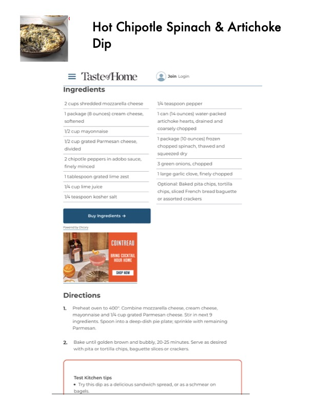

Hot Chipotle Spinach & Artichoke

Original cookbook page 414
Ingredients
- 2 cups shredded mozzarella cheese
- 1 package (8 ounces) cream cheese,
- softened
- 1/4 teaspoon pepper
- 1can (14 ounces) water-packed
- artichoke hearts, drained and
- 1/2. cup mayonnaise coarsely chopped
- 1 package (10 ounces) frozen
- chopped spinach, thawed and
- squeezed dry
- 1/2 cup grated Parmesan cheese,
- divided
- 2 chipotle peppers in adobo sauce,
- finely minced 3 green onions, chopped
- I tablespoon grated lime zest 1 large garlic clove, finely choppe
- Optional: Baked pita chips, tortil
- chips, sliced French bread bagus
- or assorted crackers
- 1/4 cup lime juice
- 1/4 teaspoon kosher salt
- MAUI eu cied
- Powered by Chicory
- UTE
Instructions
- Preheat oven to 400°. Combine mozzarella cheese, cream cheese, mayonnaise and 1/4 cup grated Parmesan cheese. Stir in next 9 Parmesan.
- Bake until golden brown and bubbly, 20-25 minutes. Serve as desired with pita or tortilla chips, baguette slices or crackers. Test Kitchen tips Try this dip as a delicious sandwich spread, or as a schmear on bagels.
Recipe #414 from collection